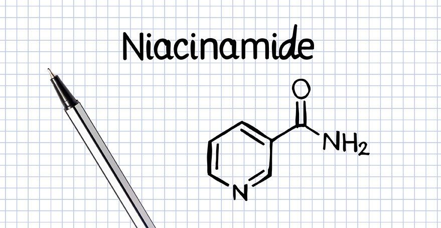

Ingredients you need to know
Here you will find education on some of the best ingredients often not talked or have mainstream attention
Mainstream popular ingredients include: Vitamin C, Glycolic Acid, Hylaronic Acid
You may have heard of these ingredients before, but let me tell you about some better ones.
KOJIC ACID
Kojic Acid is a safe and effective skin brightener that absorbs into the skin and stops melanin production by inhibiting tyrosinase, an enzyme that plays a key role in the production of melanin. This makes it ideal for targeting melasma, acne scars and other dark spots.
Product recommendations:
- Kojic Acid soap - best for bodily concerns, found on Amazon
- PCA Skin Pigment Gel
- Garden of Wisdom Alpha Arbutin 2% and Kojic Acid 1% Serum
- NIOD Re:Pigment
- SkinCeuticals Discoloration Serum
LICORICE ROOT
No. Not the sweets...
Liquorice is known for its skin smoothening and brightening properties. Licorice extract helps in fading skin hyperpigmentation and suntan. It provides even skin tone in a safe natural way. Using licorice keeps the skin clear and hydrated by blocking melanin production. It also benefits dull complexion skin and acne-prone skin.
ALPHA ARBUTIN
There are two forms of arbutin: alpha arbutin and beta arbutin. Research suggests that alpha arbutin is more stable and effective than its beta form. The main source of alpha arbutin is the bearberry bush. Arbutin is extracted from bearberry leaves because of their melanin-inhibiting properties. Alpha arbutin is a clean, water-soluble form of arbutin and is considered one of the most advanced natural ingredients in skincare, given its effectiveness in inhibiting pigmentation. It has also been shown to work well on all skin types and skin tones.
NIACINAMIDE
You have heard of this one. It's *chef's kiss* amazing for all kinds of reasons. From fiximh oiliness, clogged pores, wrinkes and more.
 '>Niacinamide also known as vitamin B3 has been clinically proven to reduce hyperpigmentation caused by aging, sun exposure, acne, rosacea and other inflammatory skin disorders. It also assists in hydrating skin cells which helps the skin retain its ability to protect the skin. This results in a more youthful appearance.
MANDELIC ACID
Mandelic acid is great for all skin tones but has some unique advantages for dark skin because of its non-irritating action. In dark skin tones, the risk of hyperpigmentation is magnified because there’s more melanin in the skin. The more melanin, the more melanocytes there are to react to skin injury or irritation and trigger excess pigmentation. Consequently, dark skin needs to be treated less aggressively than lighter tones. Gentle mandelic acid fits this requirement perfectly. Its large molecular structure slows its absorption into the skin, so it doesn’t cause irritation that can trigger an inflammatory response.